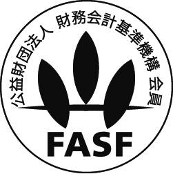
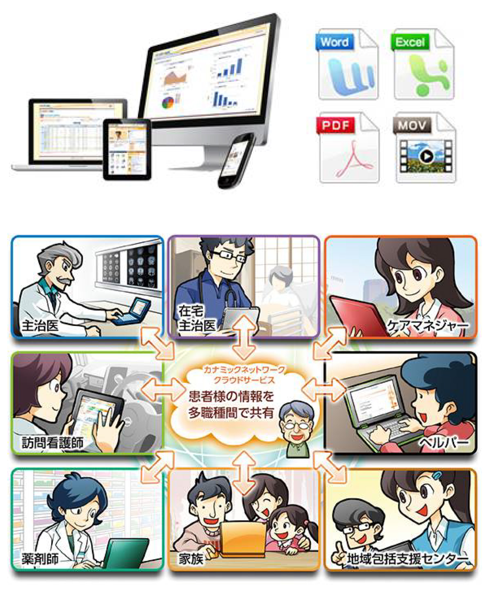
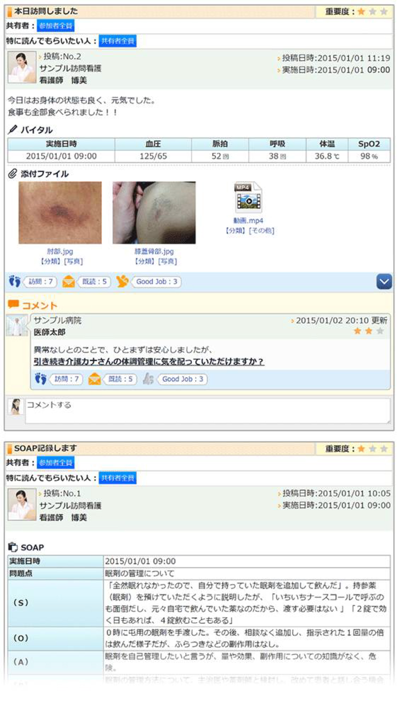
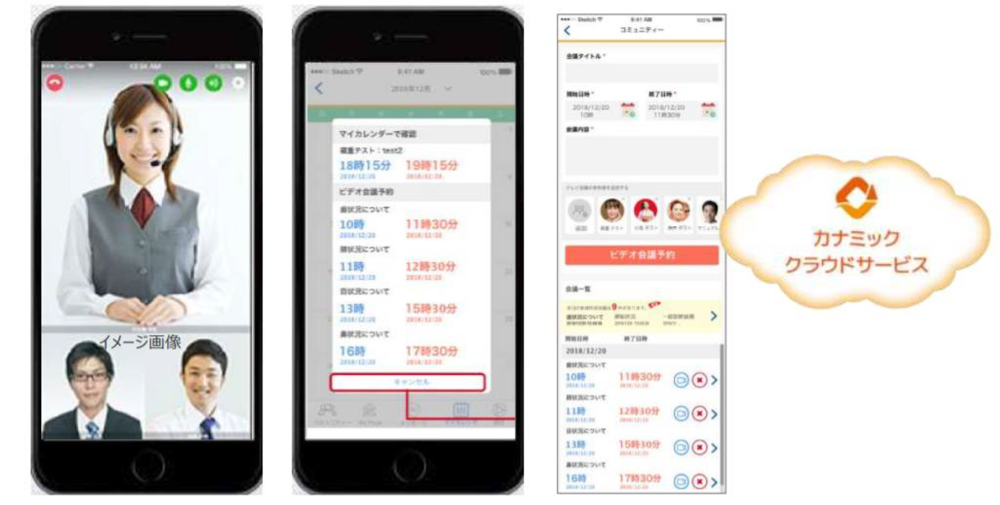

- 
- 各位
- 2020年3月31日
会 社 名 株式会社カナミックネットワーク
代表者名 代表取締役社長 山本 拓真
（コード番号：3939 東証第一部）
看護・介護におけるテレワーク事例：「ナースケアグループ」が「カナミック
クラウドサービス」を活用してテレワーク導入
菅原さんは新型コロナウイルスが感染拡大している状況下で訪問看護のテレワーク化を進めています。主にシステム上に訪問記録をつけ申し送りを行うことにより、利用者の方に関する細やかな情報がミスなくありのまま複数のスタッフに届くので一目でわかる形で共有され、また請求業務も在宅で行うなど、顔をつき合わせて行うスタッフ間の情報共有や事務所での請求処理という訪問看護の既存概念に新しい技術を掛け合わせて効率の良い新しい形の連携で「働き方改革」に取り組んでいます。
「新型コロナが蔓延している中でスタッフに出社せず仕事ができる環境を作れないかと思ったことがきっかけです。カナミックを使っていれば事務所に来なくても問題なく業務が出来ると考え、2 月末の段階で自宅勤務を決定しました。今のところスムーズに上手く行っている。」と菅原さんは手応えを感じています。
（左奥）がカナミックの技術を活用したテレワーク・働き方改革
の実現を目指す未来のためのディスカッション
① ケアマネジャーについて「世の中には一人で開業されているケアマネ事業所もありますよね。うちの社員にも営業からケアプラン作成まで個人が一貫してやっていく仕組みを構築したいと考えています。一応うちの社員ですのでその時はカナミックを使うことで個々の活動をある程度見える化するのに最適だと思っています。」
② 訪問ヘルパーについて
菅原さんがいうには、20年前なら訪問介護のヘルパーさんは直行・直帰の登録制というものがほとんどで、いかに活動内容を的確に把握出来るかが課題だったそうです。そのため、例えばケースとケースの間に１時間半が空いてしまった場合には事務所に一度戻ることがありました。
③ 訪問看護師について
「うちの看護師はみんなカナミックのシステムの基本的な機能は使いこなせていますが、まだまだテレワークに切り替えられていない状態です。このようなご時世でもありますので、看護師も
1 ヶ月以内にテレワークにシフトしていくことを目指しています。」
そこで遠隔操作が可能なカナミックを有効活用していくことになったそうです。
「システムさえあれば各スタッフの行動は全て会社が把握出来るので、従来なら事務所に戻ってくる時間を自宅に帰ってもらうという形で対応できる」と菅原さんはいいます。それに、情報共有システムを使うと会議をして報告を受けた内容は記録として残る為、後から確認することが可能になり情報共有のためだけにわざわざ事務所に集まる必要がなくなったそうです。
菅原さんはシステム内の「コミュニティ」にトピックを積極的に立ててその中でケアマネジャー、ヘルパー、看護師を含めたグループ全体で密にコミュニケーションを取っています。このような共有により今後現場のスタッフの負担が何よりも減り、週１・２回のテレワークで在宅から直行・直帰という働き方が実現するそうです。今後はまだ使いきれていないカナミッククラウドサービスの多様な情報共有機能をさらに使いこなして、より良い「働き方改革」を実現することにとても意欲的です。
菅原さんは新型コロナウイルスをきっかけに、フラットな視点で現状に疑問を持つことからスタートし、よりカナミックのシステム利用の幅を広げ機能的に使っていただいております。何より人対人の仕事で双方にとって優しくあろうとする菅原さんの姿がとても印象的でした。スタッフさんと利用者の方との間で快適な気持ちが循環し、よりよい繋がり、関係が広がっていく未来が思い浮かぶようなお話をいただきました。菅原さんの事例には今後より求められる在宅介護業界等の働き方改革という観点からも重要なヒントがたくさんつまっています。



カナミックのテレビ会議システムを活用し医師と看護師、ケアマネジャー、介護職との多職種の関係者でのカンファレンスを行う事が出来ます。テレビ会議機能による複数人同士での双方向配信やオンラインカンファレンス、電子カルテ連携等、多職種間情報共有の可能性をさらに広げます。
「カナミッククラウドサービス」について
超高齢社会に求められる「地域包括ケアシステム」の実現に寄与するために、地方自治体や医師会及び介護サービス事業者向けの多職種間連携を可能にする地域連携型クラウドサービスです。800以上の地域、10万人以上のユーザーにご利用いただいております（2019年9月現在）。多職種他法人間の連携を目的とした情報共有プラットフォームと、介護事業者向けの業務システムをラインナップしております。
以 上
本件に関するお問い合わせ先
株式会社カナミックネットワーク 管理部
所在地 〒150-6031 東京都渋谷区恵比寿4-20-3
恵比寿ガーデンプレイスタワー31階
ＴＥＬ 03-5798-3955
ＦＡＸ 03-5798-3951